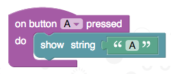

Concepts¶
The micro:bit runtime provides an easy to use environment for programming the BBC micro:bit in the C/C++ language. It contains device drivers for all the hardware capabilities of the micro:bit, and also a suite of runtime mechanisms to make programming the micro:bit easier and more flexible. These range from control of the LED matrix display to peer-to-peer radio communication and secure Bluetooth Low Energy services. The micro:bit runtime is proudly built on the ARM mbed and Nordic nrf51 platforms.
In addition to supporting development in C/C++, the runtime is also designed specifically to support higher level languages provided by our partners that target the micro:bit. It is currently used as a support library for all the languages on the BBC www.microbit.co.uk website, including Microsoft Block Editor, Microsoft Touch Develop, Code Kingdoms JavaScript and Micropython languages.

A Component Based Approach¶
Whenever computer scientists tackle large programming problems, we take the time to split the problem into smaller, independent sections to make the problem easier to solve (divide and conquer!). The micro:bit runtime is no exception, and is made up of a number of smaller components. Each of these components looks after a specific job on the micro:bit.
Building up software like this helps us to write code in a way that is much easier to maintain as the amount of code grows. For example, a component called MicroBitDisplay controls the LEDs on the micro:bit, and lets the programmer show images, animations and messages. The MicroBitIO component controls input and output through the pins on the edge of the device.
The micro:bit runtime is object oriented, with each component typically being a C++ class. There are over 30 components making up the runtime, and they are documented on these pages.
To make the runtime as easy to use as possible, there is also a grouping of the most commonly used components in an object called uBit (The ‘u’ being the greek letter mu - which often refers to ‘micro’ in scientific units!).
The uBit object can be used to easily access most of the functionality of the micro:bit. You can find the components
and functions that can be accessed this way in the uBit in the navigation bar.
To show just how easy it is to get started, the following code shows how you would write a traditional Hello World program.
This uses the uBit object to access the display component, then instructs the display to scroll the given string across
the LEDs. Try to use the uBit menu tab above to find the documentation for this scroll() function!
uBit.display.scroll("Hello micro:bit!");
!!! note Did you know that you don’t need to use the uBit object? Advanced users will likely prefer to create only the components they need to conserve memory on the device. See the advanced section for how to do this.
Events¶
Computer programs execute sequentially - one line after another, following the logic of the program you have written. Sometimes though, we want to be able to determine when something has happened, and write some code to decide what should happen in that case.
For example, maybe you want to know when a button has been pressed, when your micro:bit has been shaken, or when some data has been sent to you over the device’s radio. For these sorts of cases, we create a MicroBitEvent.
Creating Events¶
Many components will raise events when interesting things occur. For example, ‘MicroBitAccelerometer’ will raise events to indicate that the
micro:bit has be been shaken, or is in freefall and ‘MicroBitButton’ will send events on a range of button up, down, click and hold events.
Programmers are also free to send their own events whenever they feel it would be useful. MicroBitEvents are very simple, and consist of
only two numbers:
source- A number identifying the component that created the event.value- A number unique to the source that identifies the event.
The documentation for each component defines its event source, and all the events it may generate, and also gives a name to these event values. For example, take a look at the button documentation to see that the source MICROBIT_ID_BUTTON_A has the value ‘1’, and an event MICROBIT_BUTTON_EVT_CLICK with the value ‘3’ is generated when a button is clicked.
Creating an event is easy - just create a MicroBitEvent with the source and value you need, and the runtime takes care of the rest:
MicroBitEvent(MICROBIT_ID_BUTTON_A, MICROBIT_BUTTON_EVT_CLICK);
Feel free to create your own events lke this too. Just try to avoid using any source ID that is already used by the runtime! :-) See the messageBus page for a complete table of the reserved source IDs.
Detecting Events¶
The micro:bit runtime has a component called the MicroBitMessageBus, and its job is remember which events your program is interested in, and
to deliver MicroBitEvents to your program as they occur.
To find out when an event happens, you need to create a function in your program, then tell the message bus which event you want to attach this function to. This is known as writing an event handler.
You write an event handler through the MicroBitMessageBus listen function.
void onButtonA(MicroBitEvent e)
{
uBit.display.print("A");
}
int main()
{
uBit.messageBus.listen(MICROBIT_ID_BUTTON_A, MICROBIT_BUTTON_EVT_CLICK, onButtonA);
}
Now, whenever the MICROBIT_BUTTON_EVT_CLICK event is raise by MICROBIT_ID_BUTTON_A, your code inside function ‘onButtonA’ will be automatically executed.
You can call listen as many times as you want to attached functions to each of the events that are useful for your program. In fact, a block like the following in the Microsoft Block language translates into code just like that shown above when it is run on a micro:bit!

##Wildcard Events
Sometimes though, you want to capture all events generated by some component. For example, you might want to know when any changes in a button has happened. In this case, there is a special event value called ‘MICROBIT_EVT_ANY’. If you call listen with this value, then ALL events from the given source component will be delivered to your function.
You can find out which ones by looking at the MicroBitEvent delivered to your function - it contains the source and value variables that the MicroBitEvent was created with.
For example, you could write a program like this:
void onButtonA(MicroBitEvent e)
{
if (e.value == MICROBIT_BUTTON_EVT_CLICK)
uBit.display.scroll("CLICK");
if (e.value == MICROBIT_BUTTON_EVT_DOWN)
uBit.display.scroll("DOWN");
}
int main()
{
uBit.messageBus.listen(MICROBIT_ID_BUTTON_A, MICROBIT_EVT_ANY, onButtonA);
}
If you REALLY want even more events, there is also a MICROBIT_ID_ANY source, that allows you to attach a function to event generated from any component.
Use this sparingly though, as this could be quite a lot of events!
The following code would attach the onEvent function to receive all the events from the whole runtime:
void onEvent(MicroBitEvent e)
{
uBit.display.scroll("SOMETHING HAPPENED!");
}
int main()
{
uBit.messageBus.listen(MICROBIT_ID_ANY, MICROBIT_EVT_ANY, onEvent);
}
Queued Events¶
When you write an event handler, your function will be called each time the relevant event is raised. But what happens if your handler takes a long time to execute?
The example above will scroll “SOMETHING HAPPENED” whenever any event is raised... but scrolling that message will take several seconds to complete!
What if another event happens during this time? By default, the runtime will queue any events for your event handler until it has finished what its already doing.
As soon as your handler is finished processing an event, the next one will be delivered (any other event handlers will be unaffected though - just because one event handler is busy, doesn’t mean that another one can’t receive its events!).
The runtime does allow you to change this behaviour if you want to though. See the advanced documentation in MicroBitMessageBus for more details.
!!! note More advanced programmers might be interested to know that you can also attach event handler to member function of C++ objects. See the other forms of listen function in MicroBitMessageBus for more details.
Concurrency¶
It is not uncommon to want to write programs that can do more than one thing at a time. For example, it takes quite a long time to scroll a message over the LED matrix, so what if you want your program to do something else while this is happening?
Programs that do more than one thing at a time are called concurrent programs.
The runtime provides two ways you can achieve concurrency in your programs:
Functions that may take a very long time to complete (e.g. display.scroll) often have “Async” versions (e.g.
display.scrollAsync).These functions have the exact same behaviour as their counterparts, but don’t wait for the effect to finish before allowing the user’s program to continue.
Instead, as soon as the function is called, the user’s program carries on executing (and can go an do something else while the task is running in the background).
Users can also make use of the runtime fiber scheduler. This lets you run parts of your program in the background, and share the processor on your micro:bit between those parts as they need it.
In fact, whenever you write an event handler, the runtime will normally execute your handler in the background in this way, so that it reduces the impact on the rest of your program!
The scheduler is a type of non-preemptive scheduler. This means that the runtime will never take control away from your program - it will wait for it to make a call to a runtime function that is blocking.
All the functions that are blocking are listed as such in their documentation. You can create fibers at any time.